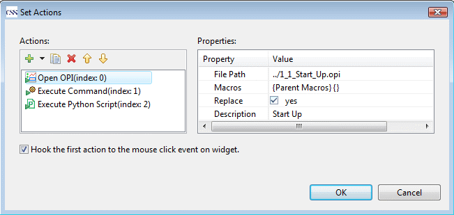
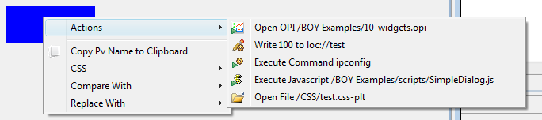

Actions can be attached to any widget so that actions can be executed from that widget.
They are configured from the Actions Property.
There are several types of actions that can be associated with any type of widget. You may also add
customzied action through Eclipse plugin mechanism.
Repalce is selected, it will replace
the current OPI. You can send macros to the OPI to be opened by setting the Macros
property. If a widget has this action hooked to its mouse
click event, user will also be able to open the related OPI from its context menu:
Open, Open in New Tab or Open in New Window. Or user can
hold the Ctrl/Shift key while clicking on the widget
to open the related OPI in new Tab/Window.Detached. By clicking Detached again, you can
put it back to the workbench window.Confirm Message is not empty, a confirm dialog will pop up before writing the new value to PV.
$(opi.dir) which points to the directory of the OPI file on the OS file system.
widget and display so that you can
access the widget or the display. See Access Widgetwidget and display so that you can
access the widget or the display. See Access WidgetActions are configured from the Actions property of widget. The first
action can be hooked with the mouse click event, which means clicking on the widget at Runtime
will execute the first action.

At Runtime, you can execute an action by right clicking on the widget and selecting the action from
Actions submenu. If you selected the option
Hook the first action to the mouse click event on widget in
the actions config dialog, you can simply execute the first action by clicking on the widget.

Actions may also be invoked from script by calling the method executeAction. For example:
widget.executeAction(0); //execute the first attached action